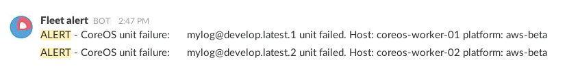

Slack message on CoreOS fleet unit failure
Sat, Jan 9, 2016Quick overview
AWS oriented, but the logic can be used with other messaging services.
- Create an AWS Lambda function to post to Slack.
- Create an AWS SNS topic to trigger the Lambda function.
- Deploy a dedicated monitoring unit to trigger SNS.
Context
I needed to monitore fleet unit failure on my CoreOS clusters and I was very inspired by this post: http://northernlightlabs.se/systemd.status.mail.on.unit.failure.
As we can’t deploy templates with fleet, we can’t use this solution which triggers a unit template at failure: OnFailure=unit-status-mail@%n.service where %n is the prefix of the failed unit.
Here’s my workaround below.
Slack web hook
We need to add a web hook integration to a channel and get the web hook url.
Wen can specify a name and a logo.
AWS Lambda function
Thanks to vgeshel, we create a nodejs Lambda function on AWS with this code:
console.log('Loading function');
const https = require('https');
const url = require('url');
// to get the slack hook url, go into slack admin and create a new "Incoming Webhook" integration
const slack_url = 'https://hooks.slack.com/services/...';
const slack_req_opts = url.parse(slack_url);
slack_req_opts.method = 'POST';
slack_req_opts.headers = {'Content-Type': 'application/json'};
exports.handler = function(event, context) {
(event.Records || []).forEach(function (rec) {
if (rec.Sns) {
var req = https.request(slack_req_opts, function (res) {
if (res.statusCode === 200) {
context.succeed('posted to slack');
} else {
context.fail('status code: ' + res.statusCode);
}
});
req.on('error', function(e) {
console.log('problem with request: ' + e.message);
context.fail(e.message);
});
req.write(JSON.stringify({text: JSON.stringify(rec.Sns.Message, null, ' ')})); // for testing: , channel: '@vadim'
req.end();
}
});
};
NB: the first million of Lambda resquets is free, each month !
SNS topic
Now we create a SNS topic and a subscription with our Lambda function as protocol. Note the topic ARN, something like this:
arn:aws:sns:eu-west-1:1234567:fleet-alert
SNS pricing:
- There is no charge for Lambda Notifications.
- First 1,000 Amazon SNS Email/Email-JSON Notifications per month are free.
- First 1,000,000 Amazon SNS API Requests per month are free.
AWS Credentials
The more convenient way is to add an IAM role with SNS permissions to the EC2 instances. We can also use AWS credentials in the environment.
Docker container with awscli
Now we need to call the SNS topic with the AWS API. The easiest way is awscli.
A docker with awscli already exists on the Docker public image library: https://hub.docker.com/r/anigeo/awscli/
The dockerfile:
FROM alpine:latest RUN \
mkdir -p /aws && \
apk -Uuv add groff less python py-pip && \
pip install awscli && \
apk --purge -v del py-pip && \
rm /var/cache/apk/*
WORKDIR /aws
ENTRYPOINT ["aws"]
Let’s try it, update this code with your variables and add your AWS credentials in the docker environment if needed:
docker run --rm --name sns_hello_world -e AWS_DEFAULT_REGION={{ sns_region }} anigeo/awscli sns publish \
--topic-arn arn:aws:sns:{{ sns_region }}:{{ aws_account_id }}:{{ sns_topic }} \
--message "hello world"
The docker should return a json message like this:
{
"MessageId": "212ab798-3e00-333e-9368-vf8a90976e23b"
}
and you should receive “hello world” on your Slack channel.
Fleet units
Everything is set up to post to Slack, we need two more things:
- Reconfigure the monitored unit and redeploy it.
- Deploy the monitoring unit.
The monitored unit (my_app@.service)
We need to add OnFailure=my_app-unit-status@%i.service in the Unit section to have something like this:
[Unit]
Description=My application
After=docker.service
Requires=docker.service
OnFailure=my_app-unit-status@%i.service
Now we can redeploy it, in this example we want five units:
fleetctl stop my_app@{1-5}.service
fleetctl destroy my_app@{1-5}.service
fleetctl start my_app@{1-5}.service
NB: I always stop a unit before destroying it, see here and here
The monitoring unit (my_app-unit-status@.service)
Remarks:
RefuseManualStart=true: we only wan’t to start the unit when my_app fails.MachineOf=my_app@%i.servicein Fleet section: we want to deploy the unit on the same node as my_app.%His a systemd variable referring to the hostname.${PLATFORM}is an environment variable on my nodes.
[Unit]
Description=Monitore my_app unit status
RefuseManualStart=true
[Service]
EnvironmentFile=/etc/environment
TimeoutStartSec=30
Type=oneshot
ExecStartPre=-/usr/bin/docker kill %p
ExecStartPre=-/usr/bin/docker rm %p
ExecStartPre=/usr/bin/docker pull anigeo/awscli
ExecStart=/usr/bin/docker run --rm --name %p -e AWS_DEFAULT_REGION={{ sns_region }} anigeo/awscli sns publish \
--topic-arn arn:aws:sns:{{ sns_region}}:{{ aws_account_id }}:{{ sns_topic }} \
--message "ALERT - CoreOS unit failure: my_app@%i unit failed. Host: %H platform: ${PLATFORM}"
[X-Fleet]
MachineOf=my_app@%i.service
Conflicts=my_app-unit-status@*.service
Results
my_app error:
Here’s an application failure, so a unit failure as well:
Dec 12 13:47:08 coreos-worker-01 sh[24265]: ERROR org.springframework.boot.SpringApplication - Application startup failed
my_app-unit-status logs:
Dec 12 13:47:17 coreos-worker-01 docker[24451]: 8f40a5710c12: Pull complete
Dec 12 13:47:17 coreos-worker-01 docker[24451]: e2a9a58db0c5: Pull complete
Dec 12 13:47:17 coreos-worker-01 docker[24451]: b9091050870f: Pull complete
Dec 12 13:47:17 coreos-worker-01 docker[24451]: Digest: sha256:4be490e3e800b0419fef34d238fa36ef3aaeadda4cf09347c4a10f71ad7c390e
Dec 12 13:47:17 coreos-worker-01 docker[24451]: Status: Downloaded newer image for anigeo/awscli:latest
Dec 12 13:47:18 coreos-worker-01 docker[24475]: {
Dec 12 13:47:18 coreos-worker-01 docker[24475]: "MessageId": "266ab798-3e00-511e-9368-f8afdaa6e23b"
Dec 12 13:47:18 coreos-worker-01 docker[24475]: }
Dec 12 13:47:18 coreos-worker-01 systemd[1]: Started Monitor mylog unit status.
Slack
The final result:
